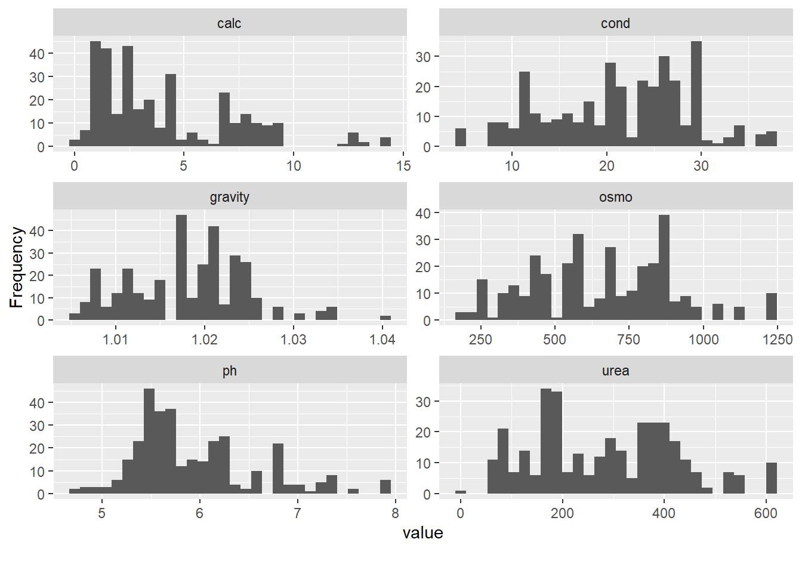
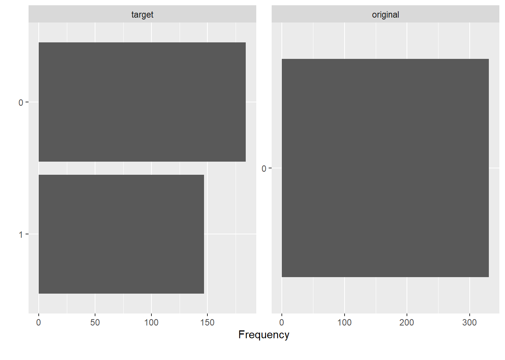
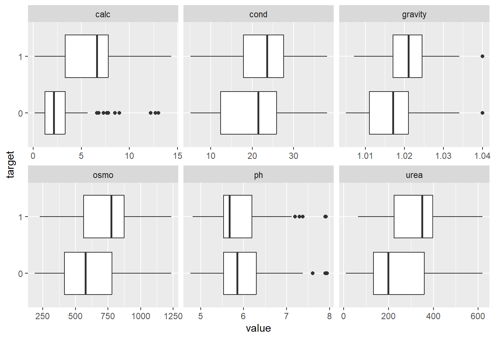
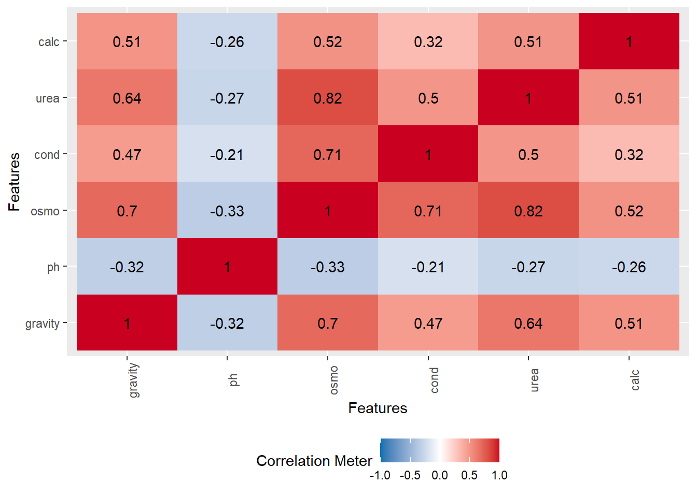
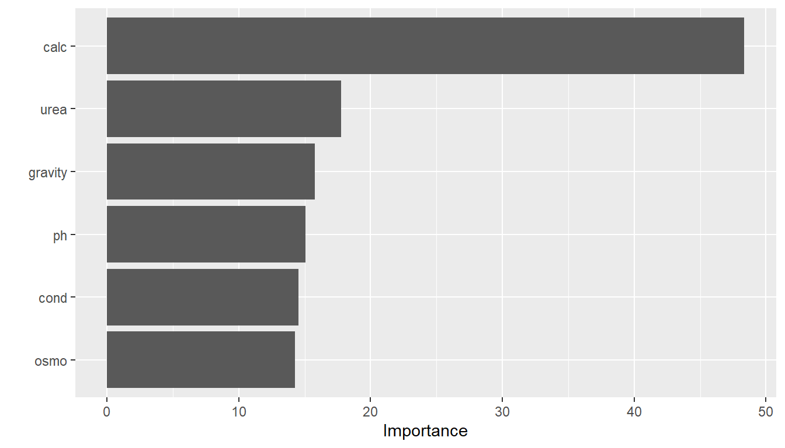
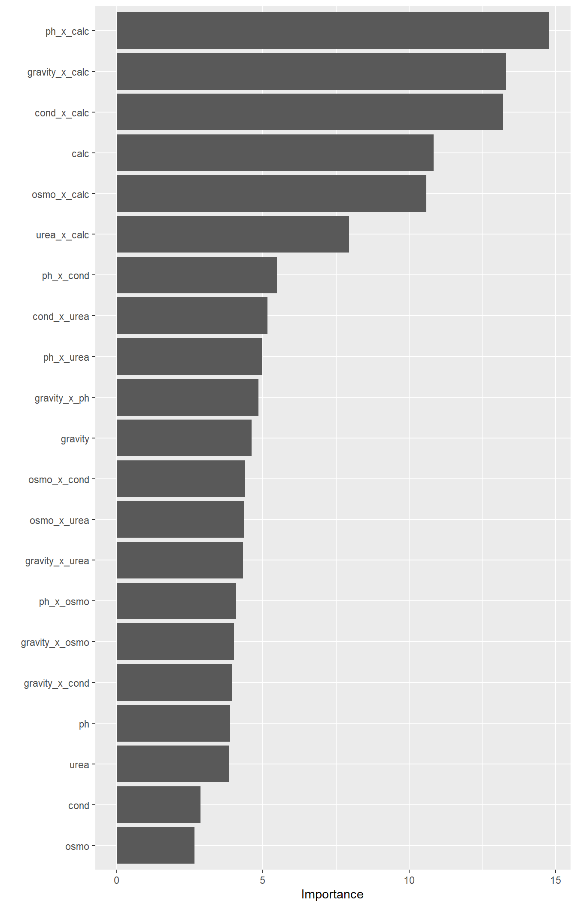

library(data.table)
library(tidyverse)
library(magrittr)
library(here) # avoid having to change between . and .. when running interactively vs knitting
library(DataExplorer)
library(tidymodels)
library(vip)
library(gridExtra)EDA
Setup
load(here("Output/01_output.RData"))Use only training data for the EDA and set switch determining whether to do EDA for original or synthetic data.
switch_original <- FALSE
if (switch_original) {
df_train <- output_01$df_train_org
} else {
df_train <- training(output_01$data_split)
}summary(df_train) id gravity ph osmo
Min. : 0.0 Min. :1.005 Min. :4.760 Min. : 187.0
1st Qu.: 96.5 1st Qu.:1.013 1st Qu.:5.530 1st Qu.: 456.0
Median :209.0 Median :1.019 Median :5.710 Median : 680.0
Mean :204.6 Mean :1.018 Mean :5.945 Mean : 660.5
3rd Qu.:308.5 3rd Qu.:1.023 3rd Qu.:6.275 3rd Qu.: 840.0
Max. :413.0 Max. :1.040 Max. :7.940 Max. :1236.0
cond urea calc target original
Min. : 5.10 Min. : 10.0 Min. : 0.170 0:184 Min. :0
1st Qu.:15.50 1st Qu.:170.0 1st Qu.: 1.470 1:147 1st Qu.:0
Median :21.40 Median :284.0 Median : 3.160 Median :0
Mean :21.28 Mean :284.6 Mean : 4.131 Mean :0
3rd Qu.:27.30 3rd Qu.:389.5 3rd Qu.: 6.885 3rd Qu.:0
Max. :38.00 Max. :620.0 Max. :14.340 Max. :0 A very straight forward data set. Fortunately, no missing values.
Marginal Distributions
df_train %>%
select(!id) %>%
plot_histogram(ncol = 2)
df_train %>%
select(!id) %>%
plot_bar(ncol = 2)
Take aways:
- Non of the continous distributions has a very skewed distribution, so transformations are probably not needed.
Distributions by target
df_train %>%
select(!id) %>%
plot_boxplot(
"target",
ncol = 3
)
Take aways:
- urea and osmo looks fairly similar, as do gravity and cond
Correlation
df_train %>%
select(!c(id, original)) %>%
plot_correlation(type = "continuous")
Urea and osmo are fairly correlated and have similar marginal relationships with the target
Variable importance
Only main effects
rerun_main <- FALSE # In this case, the models runs extremely fast because the dataset is so small, however, this is best practice
if (rerun_main) {
rf_fit_main <-
rand_forest() %>%
set_mode("classification") %>%
set_engine(
"ranger",
importance = "impurity"
) %>%
fit(
formula = target ~ .,
data = df_train %>% select(!c(id, original))
)
rf_var_imp_main <-
rf_fit_main %>%
vi()
save( # caching does not really work for som reason
rf_var_imp_main,
file = here("Output/02_featImp_main.RData")
)
}load(here("Output/02_featImp_main.RData"))
rf_var_imp_main %>%
vip()
With interaction features
# -- Include "brute force" interaction terms
rerun_int <- FALSE
if (rerun_int) {
rf_rec_int <-
recipe(
formula = target ~ .,
data = df_train %>% select(!c(id, original))
) %>%
step_interact(
terms = ~ all_predictors():all_predictors()
)
rf_spec_int <-
rand_forest() %>%
set_mode("classification") %>%
set_engine(
"ranger",
importance = "impurity"
)
rf_wflow_int <-
workflow() %>%
add_recipe(rf_rec_int) %>%
add_model(rf_spec_int)
rf_fit_int <-
rf_wflow_int %>%
fit(df_train %>% select(!id))
rf_var_imp <-
rf_fit_int %>%
extract_fit_parsnip() %>%
vi()
save(
rf_var_imp,
file = here("Output/02_featImp_int.RData")
)
}load(here("Output/02_featImp_int.RData"))
rf_var_imp %>%
vip(num_features = 21)
To do
- Acount for data scarcity
- Bin categorical features. Note in particular that there are 20 unique values of store_sqft, each of which denote a different store. We might want to encode this as a factor.
- Normalize predictors
- Salad bar and prepared food is the same variable
- Try to include external data as well